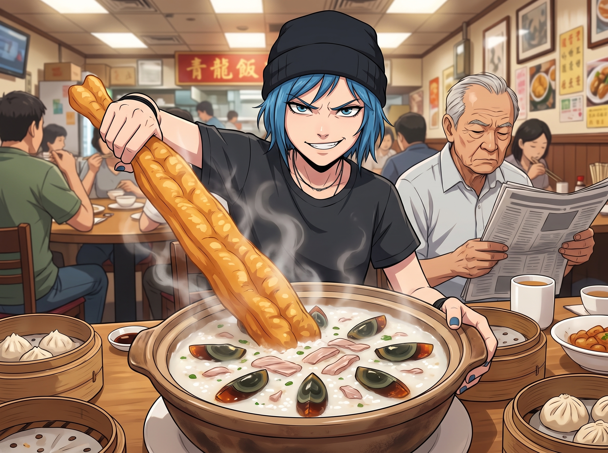
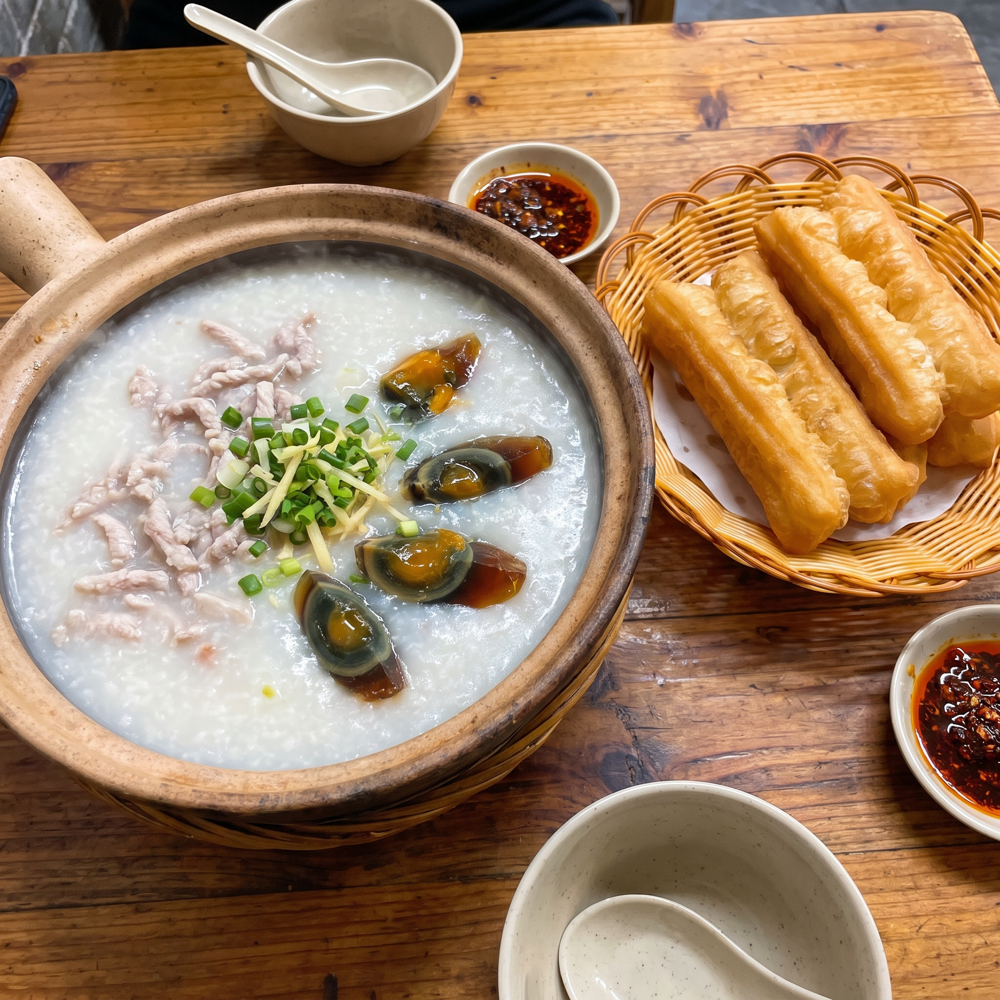
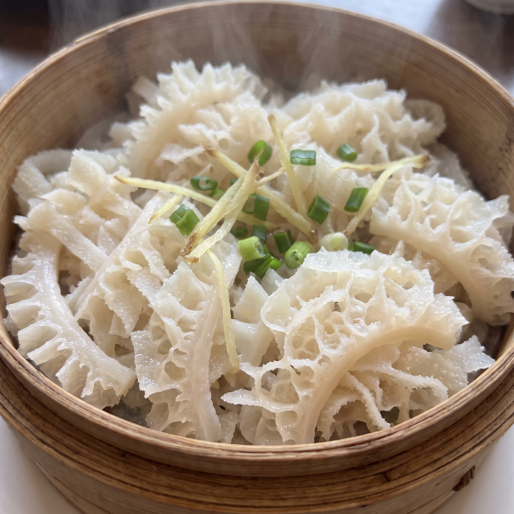

粥水靚點



這場在西雅圖中國城的早茶狂歡，隨著點心推車阿姨的一聲高亢的「粥水靚點——」，進入了下半場。
當一大窩皮蛋瘦肉粥和幾根剛炸出鍋、金黃酥脆的油炸鬼（油條）被端上桌時，餐桌上的畫風再次發生了嚴重的兩極分化。
一、油炸檜的歷史行政學
Chloe 毫不猶豫地抓起一整根超過三十公分的油炸鬼，把它當成了一把中世紀的寬刃劍，在半空中揮舞了一下。接著，她豪邁地將這根「武器」狠狠插進面前那碗滾燙的粥裡。
「這才是碳水化合物的終極奧義！」Chloe 咬了一口吸滿了粥水、外軟內脆的油炸鬼，發出滿足的讚嘆，「把油炸麵團泡進鹹味的米漿裡，發明這個吃法的人絕對是個街頭天才。」
Max 則安靜地用湯匙攪拌著皮蛋瘦肉粥。對於社交電池已經開始耗盡的她來說，這碗綿密溫熱、帶著淡淡胡椒香氣的粥，簡直是安撫神經的最佳魔藥。
Victoria 則是滿臉驚恐地看著 Chloe 滴著粥水的油條，彷彿在看什麼生化武器：「這完全是在向心血管系統宣戰。」
「Victoria 學姐，其實『油炸鬼』這個名字背後，有著非常嚴謹的歷史行政學淵源。」Lily 乖巧地喝了一口茶，「相傳南宋時期，百姓為了洩憤，將奸臣秦檜夫婦的麵團捏在一起下鍋油炸，稱為『油炸檜』。也就是說，Price 學姐現在正在咀嚼的，是具象化的『民眾對腐敗官僚的私刑處決』。」
Chloe 聽到這裡，眼睛一亮，嚼得更用力了：「酷斃了！我喜歡這道菜！老娘正在物理超度貪官！」
二、美麗的誤會
然而，真正讓這頓早茶達到高潮的，是隨後端上來的一籠薑蔥牛百葉。
當蒸籠蓋子被掀開時，一股清新的薑蔥香氣撲面而來。躺在蒸籠裡的牛百葉切得細長均勻，潔白剔透，表面佈滿了細密精緻的刺狀突起，宛如深海裡美麗的白色珊瑚。
經歷了鳳爪恐懼症的 Victoria，眼睛瞬間亮了起來。
「這才是符合文明社會標準的食物。」Victoria 拿起勺子和筷子，仔細端詳著這晶瑩剔透的食材，「這種形態……是某種深海的珍稀藻類嗎？」
沒有人回答她，因為 Chloe 已經夾了一大筷子塞進嘴裡，一邊嚼一邊發出清脆的「喀滋喀滋」聲：「管它是什麼，這玩意脆脆的，口感簡直絕了！」
Victoria 也優雅地夾起一根牛百葉送入口中。那種爽脆彈牙、毫無腥味的奇妙口感瞬間征服了名媛挑剔的味蕾。
「嗯，火候掌握得非常精準。」Victoria 滿意地用餐巾按了按嘴角，甚至露出了今天第一個真心的笑容，「如果 Chase 畫廊下次舉辦海洋主題的晚宴，我會考慮讓主廚採購這種深海藻類……它叫什麼名字？」
一直安靜吃著蛋撻的 Kate，此時微微停頓了一下，眼神複雜地看了一眼 Victoria，然後默默地把手裡的熱茶推到了她面前。
三、真相大白
「Victoria 學姐，這不是深海藻類。」Lily 的聲音溫柔得像是在播報天氣預報，「這是反芻動物的第三個胃，學名叫做重瓣胃。也就是牛用來榨乾食物水分、進行初步消化的內臟器官。您剛才稱讚的那些精緻的『蕾絲褶皺』，其實是牛胃壁上的黏膜突起。」
包廂裡的空氣，在這一秒鐘，彷彿被抽成了真空。
Victoria 臉上的笑容徹底僵住了。「內……內臟……牛的……胃……」名媛的聲音開始發抖，手裡的筷子「啪」的一聲掉在了桌上。
剛嚥下第三口牛百葉的 Chloe，原本還在得意洋洋的表情瞬間凝固。她猛地捂住嘴巴，臉色由紅轉綠。
「Lily……妳為什麼……不早說……」Chloe 發出一聲變調的乾嘔，整個人癱倒在椅子上，開始瘋狂灌普洱茶。
「因為您們吃得非常開心呀。」Lily 乖巧地眨了眨眼，「它的蛋白質含量極高，非常健康呢。」
「我要洗胃！！」Victoria 終於徹底崩潰了。名媛一把抓起愛馬仕包包，像一隻受驚的孔雀一樣從椅子上彈了起來，連滾帶爬地衝向了酒樓的洗手間。
Max 默默地放下相機，看著桌上那籠依然散發著薑蔥香氣、美麗如珊瑚般的牛百葉，決定這輩子都只吃鮮蝦腸粉。
「來，Lily，多吃點。」Kate 溫柔地將剩下的牛百葉推到了實習生面前，笑容裡充滿了慈愛，「多補充點膠原蛋白，下午才有精神幫大家準備暈車藥哦。」